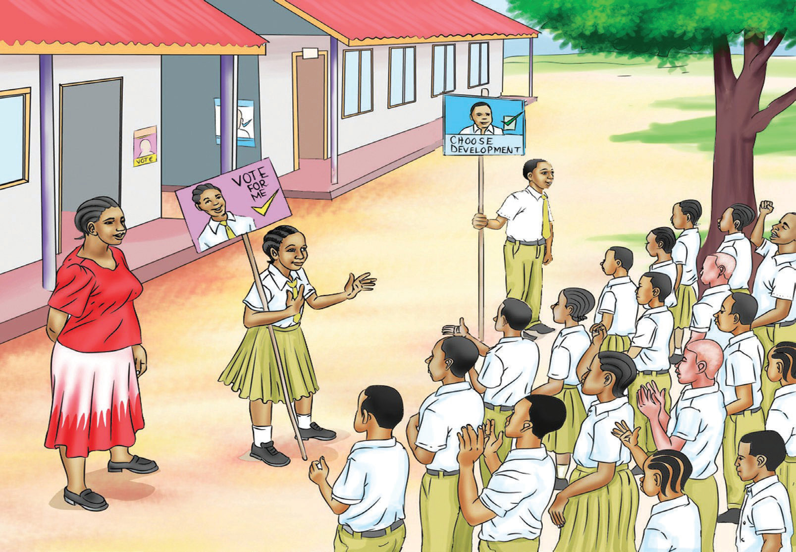

(d) Study the picture below and answer the questions that follow orally.

Questions
1. Who do you see in the picture?
2. What are the boy and girl in front of others doing? Why do you think so?
3. Who will supervise the election? Why do you think so?
4. How are elections conducted at your school?
5. Who normally forms students’ government?
6. What should be done to encourage other students to contest for school leadership positions?
(e) Participate in a class debate on the motion “Health classes should be eliminated, and the responsibility should be left to parents.”
1. Study the motion and choose either to oppose or support it.
2. Note down your points to guide you when speaking.
3. Listen to the main speakers and the arguments they make to support or oppose the motion.
4. Identify the gap from the arguments presented; prepare and present your argument.